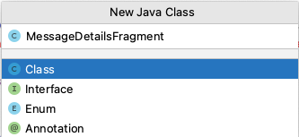
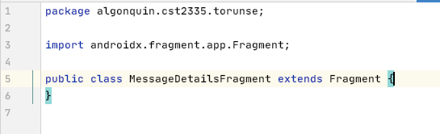
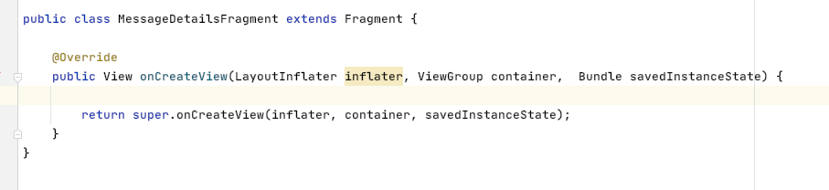
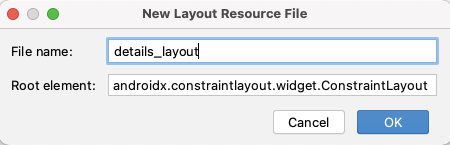
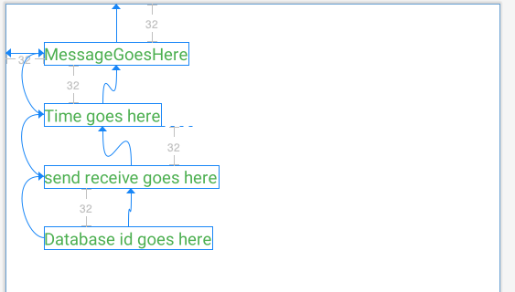
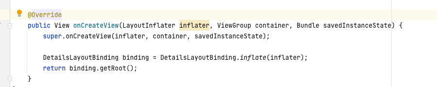
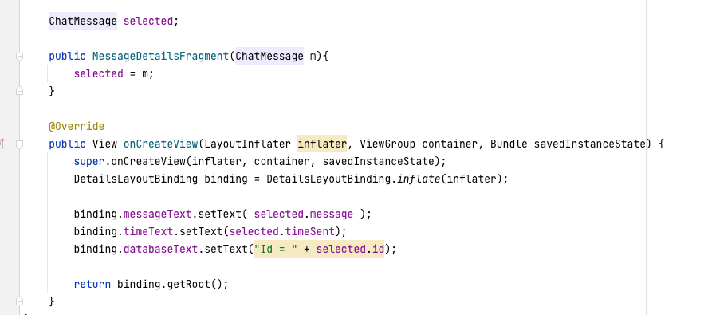

A Fragment is like an Activity object, except that it doesn't have to take up the whole screen. An Activity object represents the entire screen and if you want to change screens, you start another Activity with the startActivity() function. Fragments do the same thing although a Fragment can take up only part of the screen, like the left or right sides. Here, we will use Fragments to view a Chat Message when you click on an item in the list view.
In the previous page, you have changed the ChatRoom activity so that it listens for when the selectedMessage is updated to a new value. In this case, we want to load a Fragment on the Right side of the page on a tablet.
Create a new Java class called MessageDetailsFragment that extends Fragment. Give it the name "MessageDetailsFragment":

Then modify the Java class so that it extends Fragment:

Type Ctrl-O to generate the onCreateView() function (delete everything that has to do with @Nullable):

Now create a Layout file for showing the details of a message: (Database ID, Message, isSentOrReceive, timeSent). Create a layout file called details_layout.xml. Remember, a Fragment is like an Activity, only it doesn't have to take the whole screen:

There are 4 things to display, so drag 4 TextViews on to the display:

Here, the TextViews are all aligned by the left side, which is 32 pixels from the margin. Each TextView is 32 pixels below the TextView above.
Now in the onCreateView function, create the view binding class for this layout:

Lastly, create a constructor for your class which takes a ChatMessage object that it will use as a data source for the TextViews:

Back in the ChatRoom class, in the observe() function, add the code to load a Fragment. First you need the FragmentManager object, which is a Singleton object:
FragmentManager fMgr = getSupportFragmentManager();
Next, you use it to create what's called a FragmentTransaction:
FragmentTransaction tx = fMgr.beginTransaction();
Fragment Transactions can add, replace or remove a fragment:
In order to use the add, or replace functions, you must create a ChatRoom fragment:
DetailsFragment chatFragment = new DetailsFragment( newValue );
The add() function needs the id of the FrameLayout where it will load the fragment:
tx.add(R.id.fragmentLocation, chatFragment);
Then run the transaction:
tx.commit();// This line actually loads the fragment into the specified FrameLayout
DetailsFragment chatFragment = new DetailsFragment( newValue ); //newValue is the newly set ChatMessage FragmentManager fMgr = getSupportFragmentManager(); FragmentTransaction tx = fMgr.beginTransaction(); tx.add(R.id.fragmentLocation, chatFragment); tx.commit();
This code also follows the Builder Pattern, so you can write it all as one line:
DetailsFragment chatFragment = new DetailsFragment( newValue ); getSupportFragmentManager().beginTransaction().add(R.id.fragmentLocation, chatFragment).commit();
In the end, your observe() function should look like this:
viewModel.selectedMessage.observe(this, (newValue) -> {
DetailsFragment chatFragment = new DetailsFragment();
chatFragment.displayMessage(newValue);
getFragmentManager()
.beginTransaction()
.replace(R.id.fragmentLocation, chatFragment)
.commit();
}
You should now be finished everything for the tablet version of the app. When you click on a row in the RecyclerView, it gets the corresponding ChatMessage object and posts it to the ViewModel. Then, the ChatRoom registers as an observer of that ViewModel variable and gets notified when it changes. When it does change, it loads a new Fragment to display the selected message. It's similar to creating individual rows for a RecyclerView.
Now all that's left is to implement the phone version of the app. Instead of loading the MessageDetailsFragment into a FrameLayout beside the RecyclerView, we will load the fragments overtop the RecyclerView
The layout on a phone so far has a ConstraintLayout as the root element. A FrameLayout is meant to only hold one item, so let's put the ConstraintLayout inside a FrameLayout You will have to move all of the xmlns: declarations from the ConstraintLayout to the FrameLayout, and set the width and height of the FrameLayout to match_parent. That way when you do the fragment transaction, the new Fragment will be placed overtop the ConstraintLayout. You'll have to put another LinearLayout as the root of the file:
<LinearLayout
xmlns:android="http://schemas.android.com/apk/res/android"
xmlns:app="http://schemas.android.com/apk/res-auto"
xmlns:tools="http://schemas.android.com/tools"
android:layout_width="match_parent"
android:layout_height="match_parent">
<FrameLayout android:id="@+id/fragmentLocation"
android:layout_width="match_parent"
android:layout_height="match_parent">
<ConstraintLayout>
<RecyclerView> </RecyclerView>
...
</ConstraintLayout> </FrameLayout>
</LinearLayout>
Give the FrameLayout in the phone layout the same id as for the tablet. That way, you don't have to change the FragmentTransaction code.
When the Fragment loads overtop the RecyclerView, you will still be able to see the RecyclerView through the Fragment. You will see two things piled overtop one another. You can fix this just by making the Fragment's background color to be white:
android:background="@color/white"
Also, when you click on the back arrow, you will go back to the previous activity page. You will not be able to undo loading a Fragment overtop the RecyclerView on a phone. In order to fix this, you can add a function call as part of the Builder pattern when creating a FragmentTransaction:
.addToBackStack("") - this adds the transaction to the stack of pages to undo by pressing the back arrow.
That means that after loading a Fragment, pressing the back arrow the first time will undo the FragmentTransaction, and the second time you press the arrow, you will go back to the previous page.
That's it! Your code should now work on both a phone, and on a tablet. When a message is selected, a FragmentTransaction will load a DetailsFragment into the FrameLayout on the screen. The phone and tablet have different locations where the Fragment will end up.
| Item | Marks |
|---|---|
| You have a layout-sw600dp folder with a ChatRoom layout for tablets | (2 marks) |
| Selecting a message from the RecyclerView loads a fragment on the right side on a Tablet | (1 mark) |
| Selecting a message from the RecyclerView loads a fragment overtop the RecyclerView on a phone | (1 mark) |